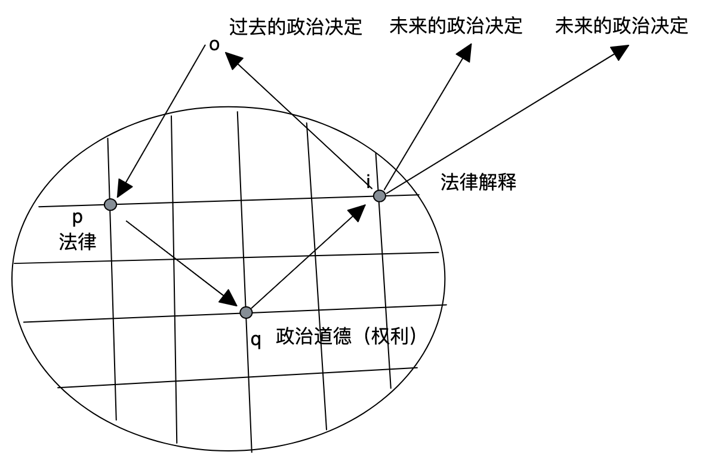

图像：思想的关键
2022-06-11
1.引言
我不止一次地听到有人说，学好数学的一个诀窍是寻找图像。我不是研究数学的，所以对此没有资格做详细的评论。我们在自然科学中到处见到图像，可以说，没有图像，很难想象自然科学理论如何清晰论述。为了明确所要研究的对象或实体，图像是必须的，一旦明确，画出图像也是必然的。与之相对照，抽象的哲学研究似乎在画图方面相当吝啬，而严重依赖文字。现在我想讨论一个有趣的问题，如果我们在哲学研究中尝试弄清楚我们的对象或实体是什么，我们自然也就用得上图像。图像，一样可以成为哲学研究的特别有用的工具。
2.图像与思想
做一些准备是有用的。我们可以从简单的思想情形开始。假设我告诉你“玛丽在公园吻了张三”。抛开复杂的语境问题，当你读到这句话，是否无论会如何在头脑中有了某些画面？也许是两个年轻人，一个是白人，一个是黄种人，还有公园的长椅，旁边还有葱郁的大树。我们对这句话的意思的理解其实是相当一致的，尽管我并非要求你对这句话想象的细节和我的一样：它的逻辑非常清晰，一个人m，在一个地方p，对另一个人z实施了某种动作K，我们甚至可以用谓词逻辑K(p,m, z)来表达；我们在别的场合见过相似的场合；这句话表达的所有项目，要么在时空中占据位置，要么是时空中占据位置的项目的相对关系。我们对K(p,m, z)中涉及的项目有不尽相同的想象，比如你想象的m胖胖的，而我想象的则瘦瘦的，但理解我的这句话的关键不是这些具体的想象，而是对它所表达的K(p,m, z)的逻辑结构的想象。我们都设想一个画面，而它们有相同的逻辑。而这对于我们当前的场合已经足够了。
对于思想而言，如果我们能够捕捉我们的对象，且能够观察或设想它们在时空中的相对关系，我们就总是能够清晰地思考。为了清晰思考，弄清楚什么是自己的对象，这些对象之间的关系是什么，是两个关键的步骤。对象，至少在特定思想的场合，应该是不可再分割的，也就是说，它们之间的界限应当是清晰的。如果你还需要思考一个对象的某种内涵性质，那么可能你还需要继续深入这个对象内部，继续捕捉一些更具体的对象，直到你不再需要诉诸一个内涵实体(就是说，它是暗昧的，它与其他对象的关系由它的某些性质来解释)。当问题来到有清晰边界的对象之间的关系时，如果它们之间作用和交互不是超距或没有原因的，则需要设想一些中介物。这些中介物是为了解释前面对象的关系所必须假定的，它们很可能只是对对象的内涵性质的某种外延模式的表达，或者是在这些对象之外存在的但并未被直接捕捉的对象。
在我们的特定思考完成了以上两个步骤后(或者在完成这两个步骤的过程中)，我们就可以在白纸上勾勾画画。以某个词、某个圆圈、某个三角形等等，来代表我们捕捉的对象，以连线或箭头来代表它们之间的关系和交互。假设，你正在思考这样一个问题，形而上学决定或形而上学奠基是什么。你被文献告知，A事实在形而上学上决定B事实，则B事实的获得(obtaining)凭借(in virtue of)A事实的获得。你就可以在纸上画下两个点或别的什么。比如，每次你写下一个“A”，就在下方写下一个“B”。你的书写事件，本身就是一个描绘形而上学决定事件的动画。现在文献告诉你，与形而上学决定相对照，还有理性关系决定，即B事实的获得凭借B事实的获得，且这在理性存在物(心灵)而言是可理解的。而所谓可理解的，是有某种东西能够为上述事实向心灵提供某种理由。理由是一种思量或者说考虑，当心灵想到以上决定事实，就能够凭借这种东西而获得理解。形而上学决定因而可能对于心灵是暗昧的，而理性关系决定则必须是透明的，比如，一些搞笑的事情的发生，总会惹我们大笑，在搞笑的事情和我们的幽默体验之间的关系，就可能是暗昧的，我们能够捕捉这两种东西，而且知道他们之间有某种伴随关系，但却不知道为什么会这样。
以上这个看似抽象的问题，其实也无非是以一些圈圈点点之间的关系来思考的。重要的是那两个步骤，我不妨重复一遍，第一，确定什么是你的对象；第二，确定这些对象之间的关系是什么。如果你讨论的对象本身是相互渗透或者包含的，甚至每个对象本身的同一性是含混的，则思考就会遇到相当大的问题，它可能越来越含混。在特定的思考场合，相关的对象必须尽可能相互独立和彼此分离，尽管它们在别的思考场合可能是相当复杂的，其中有相当复杂的组成要素等等。
假设你讨论的是司法与民意的关系。一定不能上来就这样考虑它们之间的关系：司法如果怎么样，则民意相应地怎么样，好像它们可以像边界清晰的物理对象那样交互。司法和民意这两个项目是否在目前的思考场合中是适格的对象或实体？如果不是，比如，司法中包含A、B、C、D等要素，而民意中包含C、H、I、G等要素，则不能简单谈论它们之间的关系和交互。文科研究的一个极为糟糕的现象是，大多数谈论所涉及的项目根本无法确定同一性，且相关项目之间相互包含或渗透，但常常将这些项目的关系说得好像是物理对象一样，比如，A挤压了一下B，则B会向后移动一下。
文科研究的大多数对象都没有物理学研究中的对象的那种便利，几乎所有的文科研究对象都不是外延对象。在物理学中，如果我们已经确定了哪些是我们的对象，我们也必定明确了捕捉这些对象的概念或理论，比如我们捕捉的对象是a和b，则我们很可能有F(a)=a和G(b)=b，这是因为我们有F(x)和F(y)，后二者是我们用以捕捉对象的概念，我们可以在它们的基础上建立方程式，来验证我们同样识别为F类和G类的其他对象，看看这些对象的关系是否与当初建立的方程式的预测相符合。否则，我们就得调整方程式，比如寻找更多的对象(变量)，或者在寻找未果的情况下，为方程式添加常量，以得到暂时的结果。
尽管物理学家，比如爱因斯坦，说我们对世界的分割是我们的自由创造，但在很大程度上，物理学的对象和方程式，是由相当独立的世界决定的。在物理学对象、方程与世界之间存在某种对应关系。相对来说，文科研究更可以说是对世界的自由创造。尽管如此，你仍然可以谈论任何抽象的对象，这些对象在物理世界中根本找不到对应物，在社会世界中也可能没有简单的对应物，比如，你谈论心灵、理性、理解、正义、法律、道德、公平、友爱、嫉妒、政府等等。但在一个特定的场合，这些项目就被努力处理得当，以使它们能够经得住清晰思考的那两个步骤。总之，虽然文科思考的对象没有物理学思考的对象那样的外延性质，但我们也必须尽可能地就特定的思考场合(比如，一段谈话、一本著作、一篇论文、围绕某个议题对若干文献的相关讨论的比较)，努力弄清楚我们的对象是什么以及它们之间的关系是什么。如果是这样，在弄清楚这两个问题之后或在这个过程中，我们完全而且应当画出这些对象的图像。我们需要在这些图像的基础上，组织对我们的思想成果的表达，我们将有清晰定义或界定的对象，并可以建立命题，设想可能的反驳，发现必须假定的未知对象，并为整个论证建立恰当的边界和范围。如果有了以上这些，我们的研究也就有了类似科学研究的品质。图像，在这个过程中，一直是关键。
3.物、图像与心灵
我们一般将图像理解为这样一种东西：它是对物的描画。我们能够区分物和物的图像。它们是两类不同的范畴，一种是实在本身，一种是对实在的表达。在这里，我不想做一个漫长的哲学史考察，作为一个对照，来突显现代哲学在这方面的一个转变的意义。但可以简答说明的是，现代哲学，至少是语言哲学的重大发展，就是极大地提升图像的地位，贬低意义的地位：并不存在物和图像之间的真正差别，因为并没有真正的在物和图像之间的(非物非心的)意义之中介。
可以从维特根斯坦的一个著名的问题开始：当说这幅画比那幅画画的更像时，你的意思是什么？你可能想说，当我们将这两幅画同时拿到所描述的物面前，我们就知道答案了。这个日常事件是相当平凡的，但对它的哲学分析不是这样。为了确切表明A画比B画对X描画得更像，我们需要一幅标准画。假如有这样的一幅标准画C，则是什么来决定C是最相像的？在X存在的情况下，最像X的画是X。但当我们站在X面前时，X并不自动告诉我们这一切。X在我们各自的心灵有一个图像，我们将这个图像与A画和B画相比较，然后得出结论。这个过程相当顺利的，但有一个问题，我的X心灵图像和你的X心灵图像是两张独立的对象，且不能交换，而我们说一幅画比另一幅画更像的一般逻辑是，从同一个心灵的角度看，有一幅标准画，其他画按照它来决定相像程度。但是，假如我们要这样做，我们就遭遇两个问题。第一，这幅标准画与物X本身的相像度是如何决定的？在标准画和X之间有什么中介能做决定吗？这个中介是关于X的心灵图像吗？那么关于X的心灵图像与X之间的相像度如何决定，难道是另一个更相像的关于X的心灵图像吗？这会无穷后退。第二，即使以上能够合理地完成，那么我的心灵中发生的这些事情，如何能够与你的心灵中发生的类似事情发生联系，并做严格地比较？
有一些简单的结论是可以直接交待的：物、图像、语言、理论和思想，在存在论上并没有实质区分。所有的这些项目，总的来说是，是不同层次的图像，在特定的场合，是物和图像的关系。比如，一般认为的图像是物理对象的图像，而语言也是物理对象的图像。理论、思想乃至神经纤维，都是物的图像，而物自身又不能独立于其图像被心灵捕捉。让我们来考虑两个问题。第一，物和图像之间的关系的决定因素是什么？是一种介于物和图像之间的中介，比如说所谓的相像性吗？第二，物和语言之间的关系的决定因素是什么？是介于物和语言之间的意义吗？“介于”的意思是说，中介物非物又非图像，或者非物又非语言。这种东西是什么呢？我们在上面的讨论中已经涉及物和图像的关系。相像性无非是对心灵图像的另一个说法。但心灵凭什么建立物的图像？物和心灵的关系到底是什么？对意义的讨论也逃脱不了心灵图像，因而也无法逃脱对物和心灵的关系的追问。
我在这里不想现象讨论哲学问题。我可以简单地总结说，如果你不想在物和心灵之间寻找非物又非心的中介物，一种神秘的存在，你可以满足于，就特定的思想场合和阶段，将物和心灵的关系视作直接的投影关系，而这也是我所坚持的。这样，所有的项目，凡是能被心灵所想到的，都本身是某种图像，用于在特定场合投射或描画其他项目。它们之间的关系是直接的，无需“半人马”般的神秘中介。
4.两个例子
以上讨论对于我们在阅读、写作中的思想一个重大的启示在于：(1)思想，是建立图像的过程，而图像无非有不同的经验形式而已；(2)为了建立思想的图像，你需要在纸上勾勾画画；(3)当你思考举步维艰时，尤其需要如此，画下一些对象，然后看着它们，试图在周围化出更多的对象，或者以圆圈选中它们，或者以线条或箭头联系它们，思路就可能会打开；(4)当你阅读时脑袋逐渐浑浊，甚至头疼起来，可能是因为，你的中枢神经纤维因为无法建立关于书本内容的图像而陷入无效状态，中枢神经纤维可能是我们的思想的最后一幅画。
下面，我将举两个例子，以展现以图像来思想的优点。请注意，这两个例子对相关思想理论的论述不是完整的。不了解相关理论论述的人，大可略过论述的细节，而只关注我为这些复杂的论述建立图像这件事，相信这不会损害我的例子所要达到的说明目标。
4.1德沃金与解释
德沃金在《法律帝国》中发展了一种相当深刻的解释理论。解释的基本结构是心灵与物。任何解释所发生的基本实情都是，心灵对物注入某些东西，以使得物是可理解的、所欲念的、最佳的等等。这基于一个基本的事实：心灵和物必须交互，且在大多数乃至场合，心灵都主动发挥作用。
解释必须涉及话语。explaining在许多场合也被说成“解释”，特别是在自然科学或其他涉及因果关系的思想活动中，但与interpretation不同。explaining处理物时，虽然也必须通过观念和语言，但显然在大多数场合，观念是对物的现实的捕捉，而语言是对观念的表达；在这里，观念和语言相对于物都是次生的。所以，explaining的情形特别符合日常中对语言或图画的理解，语言和图像都被用来表现(represent)物。interpretation则很不相同，其中话语或者语言拥有更实在的地位，而不单纯是对象的辅助工具或次生品。
解释一个对象，就是试图将某些重要性(significance)、意义(meaning)、价值或目的注入其中。解释首先要问，对象是什么，而这个问题与它应当是什么，它是什么才好、才有意义、才重要等的问题，无法分离。在最简单的情形中，我们需要某些个词来称谓对象X，我们说它是比如说ø，于是我们有“X是ø”。X可能是一个名字，而ø则是它的谓词。比如，我们问雷锋是什么人？雷锋是男人并不是对这个问题的有意义的回答。雷锋作为一个对象有许多面向，他的样貌、口味、私人言行、公共言行、言行后果等等等等。但我们说“雷锋是一个英雄时”，我们就一定要有关于“英雄”的基本想法，我们是按照这个基本想法来捕捉关于雷锋这个个体的许多方面的。如果我们解释雷锋的目的在于呈现一个英雄的面貌，我们就会明白，雷锋的饮食口味这些事实并不是我们应当关注的事实。
在这里，“英雄”不是一个实体，我们首先直接拥有只是语词，以及这一语词所大略指涉的观念。这是interpretation与explaning微妙差别的根源所在。语词并非只有当其在世界中有明确的对应物时，才是重要的。许多语词，比如良心、正义、忠诚、孝敬、友爱、法律、皇帝、王霸等等，处于一个巨大的语言网络之中。这些语言网络在更高阶层呈现各种观念、理论、思想、实践、文化、意识形态等。语词首先也是有经验形式的对象，它们所构成的网络，以各种方式描画世界。以ø称谓一个对象X，最直接的后果就是将其纳入一个语言网络。ø本来在这个语言网络之内占据一个节点，发挥一定的功能。因而，将X纳入一个语言网络的进一步后果是，期待X发挥ø所发挥的功能。ø也许表达了一个特别重要的实践概念，这个概念与许多其他重要的实践概念相互联系，涉及一大批认识和实践议题。ø周围的对等概念A、B、C、D可能会因为X的纳入而发一些调整，典型的表现是，某些概念影响彼此的分量发生了变化。这里发生的事情是相当复杂的，我们现在不必细究。现在我们可以看到，解释一个对象最初所发生的事情是什么。在考虑这个问题时，当我画出示意图像时，我感觉自己获得了一定的理解。

将X解释为ø，不只是将ø投射到X之上那么简单。X是ø，这个事实将会对这个网络产生一定冲击。因为有了上面的图像，现在说X对网络产生冲击使得网络发生局部的震荡，变得更容易理解了。在网络中，ø周围有许多支持节点，其中对ø“牵引力”最强可能是B节点，它将是在当前的场合中，支持将实践对象1纳入实践ø之下的要旨。当然，其他节点也会产生影响。③④是在实践对象1对网络的冲击之后，局部发生震荡和调整后，对当前和后续的实践对象的投射(德沃金多次预防说解释是将观念或语词对实践的简单投射，从我们这里的刻画看，事情当然不是这样)。此时已经形成了暂时的对ø类实践的解释i。示意中应该有一个区域，一个由解释活动产生的临时区域，该区域就是解释i所占据的区域，它集结了ø周边的节点特别是B的力量，对未来的实践对象产生明确的影像。这个示意图在多大程度上是准确的，并不是我所关心的。随着理解的深入和调整，示意图也在调整。目前我用这个示意图抓住两个要点，解释一个对象，就是将该对象先纳入一个网络，然后对网络发生震荡后，再从网络向对象投射。如果解释的基本实情是这样的，那么解释对象被注入价值、目的或者重要性是完全不可避免的，而且这恰恰也是解释的动力所在。
当人们对特定的实践，比如，男士见到女士就起身脱帽，兴起了解释性态度时(人们关心和想要发展这种实践)，就会试图为这个实践命名(或者变更命名)，比如“起身脱帽礼”。识别必定是带着一定目的或价值来开展的，否则对这一实践就不会有解释性态度，这样的习惯做法可能还会延续一段时间，并随着人们的解释性态度的冷却而逐渐消失，直至人们再次对其产生解释性态度。(写到这里，我想到当代中国对古代中国历史事件的解释性态度总体上已经冷却和消亡了。文明的断裂超过了历代。当然我仅仅陈述一个事实，对此既不表示赞赏也不表示惋惜。)
从像这样的简单社会实践的解释可以看到，解释必须有一种基本的结构：命名和称谓。这意味着在语言网络中为解释对象寻找一个位置，赋予其功能；具体而言有以下几个基本项目，场景(原始实践现象)、礼仪(实践是什么)、尊敬女士(实践的要旨是什么)。在这个过程中，对对象X的认识免不了带有某些创造，因为在完成这个过程之前，很难说X是什么。X是什么，取决于为其投射的谓词ø按照其在网络中所发挥的功能或角色对X的特定面向的挑选、排列、组合、强调和赋予权重。
任何的解释性格态度之所以兴起，本来就是解释者带着特定价值或目的进行的，价值和目的决定了被解释的实践的要旨，所以任何的实践经过解释，必须带有相应的价值或目的，从而不同于解释发生以前对它的看法。简单说，我为什么要对一个实践感兴趣？这决不仅仅是因为我想知道它在独立于我的欲望和目的的客观意义上到底是怎样的，更重要的是想知道它怎样才是最佳的，对它怎样才是最佳的理解，将影响未来类似的实践。当然，当我获得了一种解释时，我不仅认为它这样才是好的，而且认为别人也应当认为它是好的，如果所有人都不认为它是好的，它也是好的，与此同时我并不承诺一种独立存在的形而上学实体。德沃金认为这种客观性概念是可以理解的，有用且无害。(请与格林伯格对照。)解释因而有这样一个结构，用德沃金的话说，犹如一个连立方程：每当将一个实践对象o解释为p实践，则q就必定是被预设的，作为p的要旨，q对p作用后，产生i，并返回到o。这里的关键是，q是p所必须预设的，没有q，根本不会发生将o解释为p的事情，甚至没有无论什么q，根本不会发生对o解释为无论任何p。这可以简单示意为下图：

这个图对前面的图做了一些调整。以看清在一个解释中出现的重要项目。i现在不再是一个区域，而是一个临时的新节点。这里，仍然保留了实践对象和语言网络的这两个基本部分。
我们可以利用以上结构，来理解德沃金为论证法律解释做准备而讨论的文学解释。如果我们认为对作品的意义的最佳解释是寻找作者的意图，则我们可以得到一个基本的结构，即文学解释实践(o)的是理解作者的意图的实践(p)。只要我们走到这一步，我们就必须接受以下问题，为什么我们会有o-p的联立？答案或许是，理解作者的意图有助于展现作品的审美(q)。如果我们并不预设任何q，我们也就根本不会得到明确的p，也就不会对o做任何的解释。对o采取任何解释，意味着将o纳入一个巨大的网络之中，赋予其特殊的角色、重要性、功能或说要旨。
在法律情形中，按照德沃金的说法，法律是对政府的公共强制的证成，只有当其是为了强制执行一项权利时，它才得到证成，所以，一项法律决定的核心是对特定权利的公共强制。
如果我们将一项过去的政治决定(o)解释为一项法律决定，那么我们就同意该政治决定强制执行了某种法律权利(p)，而一般来说，该项权利之所以应当被强制执行，是由某种政治道德(权利)(q)所支持或者说辩护的，带着这样的法律解释(i)，我们将返回到新的政治决定。这之后，只要某个政治决定能够纳入该类法律决定(p)之下(亦即，它需要得到法律的证成)，则只有当它们被认为强制执行了某种法律权利时，才是得到证成的，直到有新的理由出现，对政治决定作出新的解释，形成新的o-p-q-i结构。总之，在德沃金的论述中，法律解释的基本的结构是：政府的政治决定(o)、法律及其权利(p)、对政治道德的承诺(q)，以及相应形成的解释(i)。这样，我们还是可以画出一个示意图来。

解释并不是一劳永逸的。上图仅仅显示了将过去的政治决定o纳入网络中所发生的事情，而后续的解释都只是向未来的政治决定投射，但实际上，后续的解释也会继续重复最初发生的事情，每一次的解释都是实践与网络双向互动的产物，只是这个示意图显示了聚焦o的一个局部的临时的解释事件而已。
我想额外提一点。在德沃金看来，支持将一项过去的政治决定视为法律，意味着该公共强制执行或者保证了某种权利，而这种权利又必定到了某种政治道德的支持。要将o解释为p，必定预设或者说承诺q。在德沃金最初的理论中，特别是在《法律帝国》中论述的整全法图像中，q的后退在很大程度上是没有止境的，除了明显的政治道德之外，还有大众道德，还有政治历史传统，以至于到整个社群的形而上学假定。实际上，在任何一次解释活动发生时，所有这些节点都同时就位，支持一个确定的解释。
德沃金明显没有为法律世界设定疆界，按照他设想的赫克勒斯的法律解释方法，在q后退到政治历史传统时还没有能够确定解释时，赫克勒斯甚至可能直接诉诸哲学和形而上学假设。所以对任何法律问题而言，不可能不存在确定的唯一正确答案。在德沃金看来，所有这些支持那个正确法律解释的背景本来就在那儿。但是，在《刺猬的正义》中，德沃金明确放弃了这个观点。他似乎认为这有点过了头，在一定意义上，这无异于否定我们可能有独特的法律实践和法律概念。他做了修正，认为“法律权利是那些人们有资格按需在司法机构(它直接指导警察的执行权力)中执行的权利”(Justice For Hedgehogs, 406)。格林伯格注意到了这种变化，并且与德沃金的私人会话中再次得到了确认(参见格林伯格自己的文章，Moral Impact Theory of Law，注释28)。
我想德沃金的这个转变是相当合理的，某种意义上，是对哈特式立场的回归。哈特认为，承认规则是法官识别法律规则惯习性规则，并且认为这就是法律体系的终极规则。如果认真对待的话，这在许多人看来是相当难以理解的。法官凭什么决定法律？一个法律体系中，为什么法官说什么是法律规则什么就是法律规则？毫无疑问，连门外汉都能明白，法律体系肯定涉及(但不必定包含)更大的权力和力量。但也许这就是哈特为法律体系设立的边界。至少在一个当代法律体系中，如果一些规则无法通过法官这个途径得到确定和执行，比如，如果它是不可被作为诉讼依据将特定的争议或纠纷带到法官面前的，那么即使它被某些官员宣称为法律规则，也肯定不是法律规则。在某些当代法律体系中，就有大量的这样的“法律规则”。而奥斯丁早就认为，宪法不是法律，而只是政治道德。法律体系如果是一个圆，外围肯定有大量的规则和现实力量，但这些法律体系是原因而不是内容，且应该由承认规则来划出界限。格林伯格没有珍视考虑德沃金的这个转变，而坚持认为，把承认规则视为法律体系的终极规则是不可理解的(用哈特的话说)，换言之，将承认规则作为对法律实践对法律内容的贡献的模式是不可理解的(用格林伯格的话说)。下文的讨论涉及这个问题。
4.2格林伯格与解释
格林伯格两篇论述事实与法律关系的论文，是从法律实证主义的核心论题开始的：法律内容只由社会事实决定，而社会事实是描述性事实的子集。格林伯格想要论证的是，法律内容不可能只由描述性事实决定，还必须加上规范性事实。为了实现这个论证，格林伯格调用了一大批相当特殊的术语。
(1)为了反驳实证主义立场，他从两个他相信没有争议的命题开始：(1)至少在包括英美法律体系在内的当代法律体系中，存在大量的确定的法律内容；(2)法律实践部分地决定法律内容。格林伯格说，他这里所说的“决定”指的是形而上学的而非认识论的。法律在特定问题上的要求是什么，这是一个事实问题，而不是一个我们相信法律要求是什么的信念问题。总的来说，格林伯格将法律内容视为至少在一定程度上独立于我们的信念的客观实在。他甚至说，“我认为，法律实践先验地蕴涵法律内容，是可信的”。但这里不是对这种说法表达惊讶的地方。
(2)他有两个基本项目：法律内容和法律内容的决定因素。
(3)法律内容和法律内容的决定因素之间的关系必须是理性上可理解的决定关系，而不只是形而上学的决定关系。A事实在形而上学上决定B事实，意味着，B事实的获得凭借A事实的获得。可以这么理解，A事实和B事实至少是一组伴随序列，每当心灵捕捉到A事实出现，则捕捉到B事实出现。形而上学决定未必要求这种伴随序列是可理解的，也就是说，到底是由于A事实有某种性质或力量，还是由于二者之间有什么中介，导致B事实的出现，这可能是不清楚的。理性关系决定则要求以上伴随序列是有原因或理由的。从格林伯格的表述看，形而上学决定未必是理性关系决定，但理性关系决定也未必是形而上学决定；但就法律情形而言，格林伯格要求法律内容和法律内容的决定因素的关系是在形而上学决定和理性关系决定的结合。这意味着，法律内容和法律内容的决定因素都必须是实在的，且二者之间的决定关系又是可理解的。
(4)法律内容是存在于任何法律体系之中的确定的实在。这意思是说，法律内容不等同于法律文本、司法决定、立法者宣言等等社会事实，两者不是相同的范畴。这些日常经验事实，参与者们的所思所想所做，尽管包含了他们的心灵状态和语言内容，但并不直接是法律内容。例如，全国人大常委会公报上的《中华人民共和国刑法》的内容不直接是法律内容，而只是法律文本，而法律文本仅仅是法律实践对法律内容的一种可能的贡献(材料)。再比如说，全国人大常委会制定法律，这个社会事实，并不天然与法律内容相关，它所以相关，是基于一些独立理由或者考虑的。我们可以把全国人大制定法律的行为看作是对中国法律体系的内容做贡献的一种尝试，中国法律体系的内容是独立于全国人大的意愿和行动的。
(5)法律内容由许多法律命题组成。一个法律命题，比如，“‘盗窃500元以上应当判处监禁’是一项法律要求”，表达了一个法律事实，即一项法律的要求，“盗窃500元以上应当判处监禁”，是存在的。一个法律事实，或者说关于法律内容的事实，是一项法律命题的真值条件。所有的法律要求组成法律内容，有时简称“法律”。对法律这样的理解，远远超出了哈特以前的法律实证主义理论家的设想，包括奥斯丁和凯尔森，也与我们对法律的日常设想完全不同。按照这种设想，法律内容是在存在论上独立于法律实践的抽象实在。但这在许多新进英美法哲学的话语中却很常见，其中“法律事实”、“法律内容”、“法律命题”、“法律要求”、“法律”，几乎没有什么差别了。
(6)由此我们能明白格林伯格所谓的构成性解释。构成性解释(constitive explaing)与德沃金的“创造性解释”(creative interpretation)根本不是一回事。构成性解释类似于因果解释，所涉及的项目是形而上学实在，所要解决的问题是，待解释项目如何由其他项目所构成，而构成是实在的而非信念上的。虽然柏林伯格也区分构成性解释和因果解释，但这种区分大概只有在物理学领域才会被注意，在法学领域，构成性解释就像是将物理学领域中的因果解释带进了法学(这样一个重要问题，我们有机会再谈)。格林伯格多次援引德沃金，但德沃金的哲学立场与之相差甚大。德沃金根本不相信或者根本不关心，作为一种形而上学实在的法律。德沃金认为实践就像逐渐展开的叙事，是人有意图的创造，而且按照我们上面的解读，法律必定在语言和行动之间来回穿梭。而在格林伯格看来，语言完全是次要的，永远只是关于(about)法律而不是法律的(of)。毕竟在物理学领域中，谁会认为方程式是物理学理论所要处理的世界的一部分？在格林伯格看来，人类法律实践依照某些模式来决定其各个方面与法律内容的相关性，也就是说，在法律实践和法律内容之间存在着依照特定模式进行的映射，其基本叙事为，法律实践事实的获得，使得法律内容获得。这就有点生物学实验中以荧光标记来捕捉不可直接获得的蛋白质结构。对此我想，或许德沃金会说，这是中了比法律实证主义者更无药可救的语义学之刺的症状，因为该刺抹上了形而上学之毒。
(7)格林伯格认为，法律实践是日常经验事实，虽然包含人们的思想、意图、态度和行动，这些东西也表达了心灵和语言内容，但都并不直接是法律内容，这是因为，法律实践和法律内容根本是两种不同范畴，二者是映射与被映射的关系，而不是包含与被包含的关系。他坚决认为法律实践并不包含任何的规范性事实，法律实践参与者根本不可能决定法律实践对法律内容的重要性和相关性，仿佛法律实践参与者在法律实践世界中远望的法律内容世界。
(8)模式(modal)决定法律决定因素向法律内容的映射，比如，什么算法律实践，法律实践的各个方面与法律内容的相关性是什么，这些相关方面如何组合并对法律内容做贡献，都由模式决定。格林伯格说，模式是法律解释方法的形而上学对应物，模式不是什么人的意愿或信念，而是一种客观实在。法律解释方法，按照格林伯格的观点，是这样一种东西，我们以特定的标准来解释法律，视特定法律事实决定了特定的法律内容。这样一个认识活动，假如正确，那一定是因为背后是有模式决定。正因为模式决定了法律实践向法律内容的映射这个形而上学事实，我们在法律解释活动中才有与对应的解释方法和解释活动。
(9)格林伯格从分析哲学那里借来一些论题(古德曼的grue和green，克里普克的plus和quas)来说明，任何实践可能支持任何模式，因为究竟什么模式是正确的，需要实践之外的实质性标准来作为约束。这可以想象为，站在法律实践世界和法律内容世界这一对映射之外，如果没有某种实质性的约束，则我们会在两者之间发现无数的映射组合模式。(是不是很惊讶？)对模式的约束可能是针对法律的某种特殊真理，也可能是针对社会实践的一般真理，也可能是某种经验事实，其如果是某种经事实，很可能就在法律实践内部。
(10)格林伯格认为，法律实证主义和非法律实证主义在以上对法律内容和法律内容的决定因素的关系的基本理解的所有方面，特别是法律决定因素在形而上学上决定了法律内容方面，没有分歧。(是不是又很惊讶？)实证主义者认为，所有决定法律内容的法律实践都是描述性事实，而不包含规范性事实，而反实证主义者则主张除了描述性事实，规范性事实也参与决定法律内容。当然，如果每当有A法律实践，就一定会伴随B法律内容，即使规范性事实对法律实践与法律内容的映射发挥影响，忽视规范性事实，也不会改变这种映射关系，而最多使得这种映射关系得不到充分理解而已。
(11)格林伯格把哈特的理论视为实证主义立场的典型代表。在他看来，哈特试图以对于特定规则的接受的倾向和态度(简称哈特式倾向)来解释法律实践与法律内容的映射关系(也就是试图以法律实践内部的社会经验事实来作为映射模式的约束)。按照格林伯格的重构，在哈特看来，承认规则是一种模式，决定了法律实践向法律内容的映射。它所以是在法律上的正确模式，是由于法律官员对它的哈特式倾向。这样，哈特就使得特殊的社会事实(不只是心理学事实，因为哈特式倾向包括哈特论述的那些使社会规则存在的行动和信念)成为法律内容的最终决定因素。
(12)对此格林伯格的基本问题是，对法律内容的这一哈特式构成性说明，能够满足他所提出的理性关系要求吗？理性关系要求，法律内容的决定因素对法律内容的获得，必须在理性上是可理解的。为此，必须有一定的理由，该理由就是一种思量或者说考虑，当心灵考虑决定因素和法律内容是这样相联系的，就自然会理解，且无需再为这样的理由提供进一步的理由，因为(尽管格林伯格没有明确说)，理解是不会无穷后退的自然事件。格林伯格认为，哈特式倾向无法满足理性关系要求，因为它无法使我们理解，为什么法律实践的各个方面是以如此这般的方式映射法律内容的。比如，为什么我们视议会颁布成文法为法律内容的重要来源？为什么我们要尊重司法先例？这些不能从法律官员自己对承认规则的接受的态度得到理解。这里有一个值得指出的要点。格林伯格和德沃金在这点的立场一样。在实证主义者和普通看来，(实在)法律自然是立法者、法官等法律官员的产物，立法者等法律官员是法律的先行物，这种理解是为我们的法律概念所决定的。但德沃金和格林伯格则认为，尊重立法者对法律的意愿、创造和解释，这是有某种理由的，即使在所有实际存在的法律体系中，立法者对法律的影响都是相当重要的，这并不从概念上认为法律上是立法者的产物，如果人们的这些理由失去了，否认立法者对法律的影响，至少在理论上是可能的。这样，格林伯格能够说，至少在当代法律体系中，公平的考虑使得立法者对法律的贡献受到尊重，因为法律最好是由大家的代表来决定。民主的考虑(与公平的考虑密切联系)则反对法院主动产生有关案件之外的纠纷的解决方案。简单说，格林伯格认为，立法者颁布成文法对法律内容做出贡献，这个众所周知的事实，不是通过考虑哈特式的倾向而可理解的，而是通过考虑公平民主这样的价值而可理解的。所以，格林伯格认为，规范性事实或者价值事实，在法律内容的决定因素当中，为法律实践对法律内容的贡献提供理由，从而在使得它们的关系在理性上是可理解的。规范性事实在这里指的是，民主价值要求立法者对法律的意愿得到尊重，而人们相信民主价值要求立法者对法律的意愿得到尊重则是一个关于价值事实的信念的描述性事实。规范性事实和“法律事实”可以做类似的理解，规范或价值，比如“应当x”或“x是好的”被认为是客观的实在，其存在是一个事实，可以成为规范性命题的真值条件。
为弄清楚格林伯格的论证，我们可以画出一些图像，它们会有很大的帮助。在格林伯格的图景中，法律内容的决定因素和法律内容是两端，中间是它们的关系，这两端还有一些出于各种原因而产生的过渡形式：(1)在法律内容这一端，会有比如法律命题-法律内容事实-法律事实-法律内容-法律要求这样的过渡形式，它们是在认识活动中对法律要求的不同表现形式，在许多讨论场合，可以合并为“法律内容”乃至“法律”。(2)在法律内容的决定因素这一端出现的大量意义相近的术语：法律实践、实践、决定法律的实践(law-determining practices)。法律实践的各个方面有立法、司法、法律文本、行政等等，以及这些实践面向所表达的心灵状态和语言学内容。(3)在中间，是映射、模式、真理、规范性事实、理由和可理解性等项目。其中，映射当然是在法律内容的决定因素一侧(主要是法律实践)各个方面与法律内容之间发生的，模式则决定了哪些映射是在法律上正确的映射，真理则是哈特主义者建议的对模式的约束。规范性事实则是格林伯格建议的对模式的约束，至于理由，则是这些约束为心灵提供的思虑和或考量。
整个图景不算复杂，特别是考虑到，格林伯格以形而上学的方法来处理法律问题所带来的空间感，更易于使我们把其论证结构，描画出基本的结构。

还可以画一张稍微微观的图片：

值得一提的是，当我考虑到格林伯格的图像与哈特的图像的对照，我又画了另一个图像。

这个示意图显示：哈特式倾向和规范性事实竞争对正确模式的约束，由此产生不同正确模式类型，并使得非法律事实对法律事实的映射提供可理解的理由。总的来说，格林伯格认为，规范性事实如果加入，使得我们能够理解以上映射，而哈特式倾向则没法做到。至于具体真理和一般真理，都是哈特主义者所试图提供的对承认规则-哈特式倾向的约束，但被格林伯格认为是不可行的。
5.结语
我本来还想讲一下德沃金的原则的图像，以说明实践中的概念、规则、原则、历史和正义的关系，但现在的篇幅已经很大了。这已经远远超出了我的计划。我将这些展示出来，仅仅作为一个例子来标明，思想是需要图像的，无论是在写作还是阅读过程中，如果我们能够画出一些图像来，至少有以下几个好处：第一，有助于思想过程的推进，迫使我们抓住要点，明确在当前的场合，所要确定的对象是什么，以及它们之间的关系是什么；第二，有助于回忆，如果没有这样一些图像，很久以后，当初梳理的要点可能就需要重头读一遍了，但如果有这样一些图像，则这些图像配合当初的一些印象，使我们很快就抓住要点。
我在前两节做的准备是为了澄清一个问题，在思想过程中，建立图像并不是一件玩耍。图像，如果不是与语言和理论并驾齐驱，也是对后者的一种极为有益的补充，因为语言和理论乃至思想，无非是对物的不同形式的描画。在物与心灵之间，并不存在非物和非心的中介。
在这点上，格林伯格虽然在任何实践可以支持任何映射法律的模式的问题上援引了两位唯名论者(古德曼和维特根斯坦)，却并不得要领。两位唯名论者的一个根本的哲学信念是，接受物和心灵的直接性，排除中介物，而格林伯格在试图在两个相互联系的项目之间寻找中介物。(他对所谓的“标准图景”的核心论题“解释直接性论题”非常不满。)为什么每当心灵相信A出现，则就相信B随之出现了呢？为什么不是每当A出现则，则随之X出现了呢？两位唯名论者，同时也是自然主义者的基本回答是，这是自然倾向：在A出现的典型场合，B随之出现，而心灵完全自然地肯定这一点。当然，格林伯格有一点是正确的，他相信理性关系决定是无需进一步理由的，但为什么哈特主义者，如果他还是一个自然主义者，就不能在一开始坚持说，在法律实践和法律内容之间的对应，无需进一步理由呢？格林伯格或许会立即反驳说，这不可能，法律实践在法律内容之外，自身不能决定自身对法律实践的相关性。所以，问题也许就在于，这种完全在法律内容之外的法律实践概念到底是不是荒谬的了。为什么不能像第二幅图所展现的那样，法律实践已然包含法律内容呢？哈特的法律理论图景有与此类似的结构，但我这里就不讨论了。